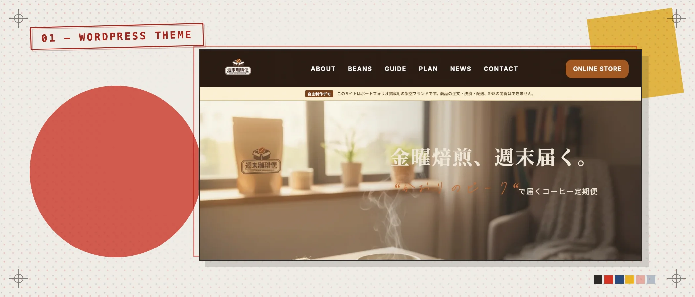
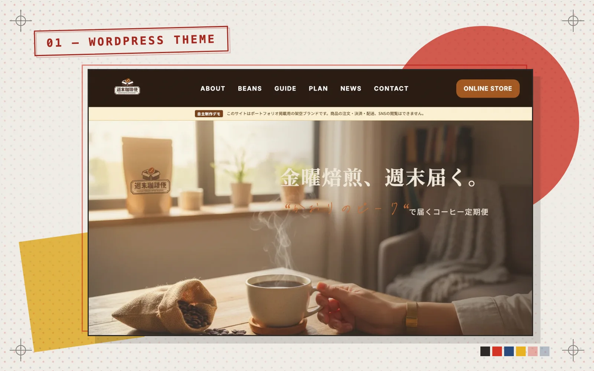
WordPress ThemeCase Study →
WordPress Theme / Concept Work
自主制作（コンセプトワーク）
週末珈琲便
コーヒー定期便の世界観と申込み導線を全8ページに展開し、PHPテンプレートへ分割したWordPressテーマ試作。
WordPressPHPHTML5CSS3Figma
設計の理由まで見せる、10の制作。
Webサイトは自主制作の架空案件、Webアプリは自主制作と学習課題。実在クライアントの実績ではありません。


コーヒー定期便の世界観と申込み導線を全8ページに展開し、PHPテンプレートへ分割したWordPressテーマ試作。
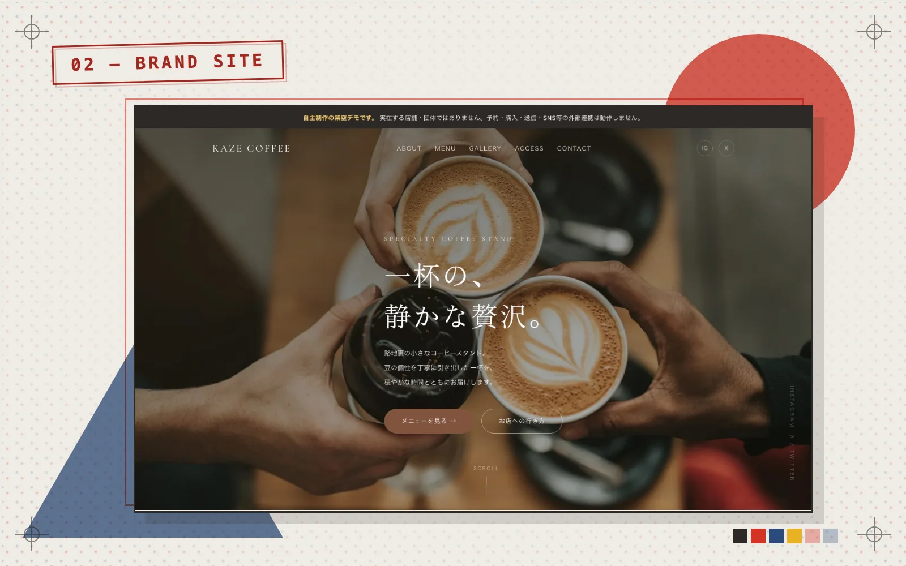
ペルソナ設定から配色・フォント選定まで論理的に設計したカフェのブランドサイト。
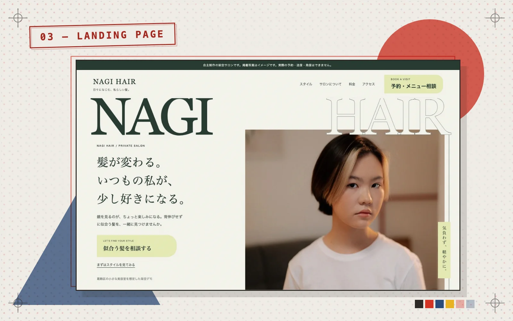
美容室・個人サロン向けに制作した1ページ完結型の架空ランディングページ。画面内の写真はAI生成です。
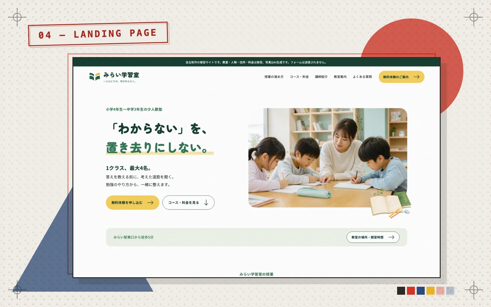
個人塾・習い事教室向けに制作した1ページ完結型の架空ランディングページ。画面内の写真はAI生成です。
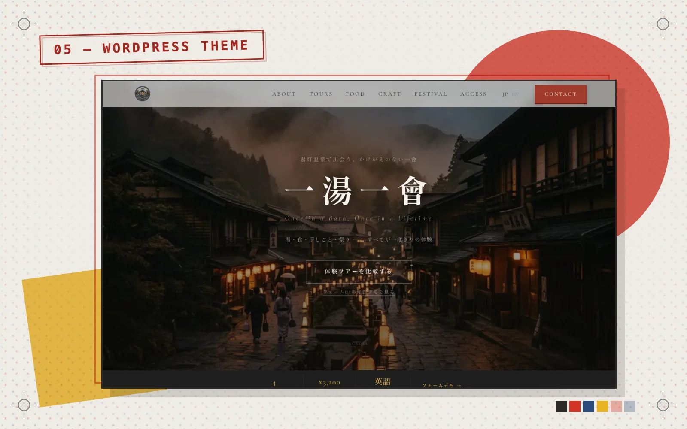
観光協会を想定し、情報分類と更新項目の構造を検討したWordPressテーマのコンセプトワーク。
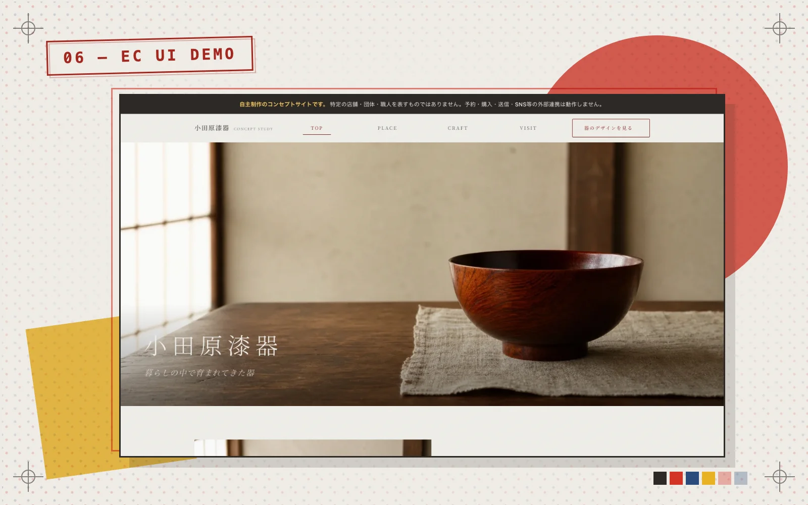
伝統工芸品を題材にしたバイリンガルUIデモ。購入・カート・決済は未実装。
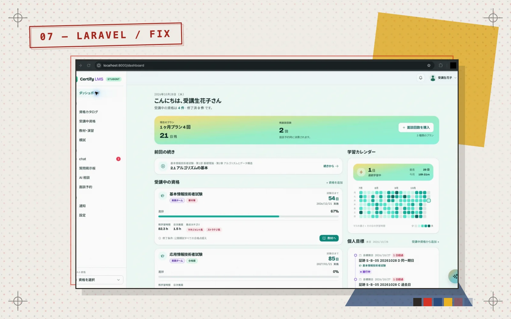
同時予約の競合や残数のずれを防ぐ予約処理。既存コードの改修と外部サービス連携を担当。
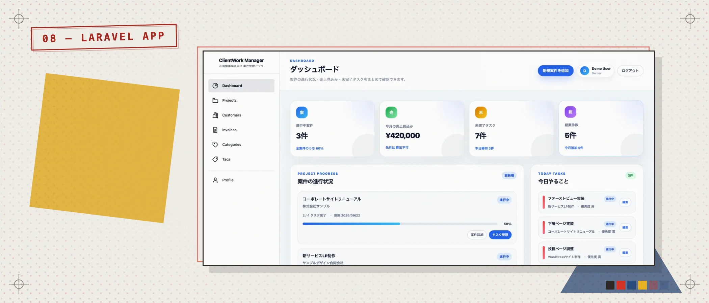
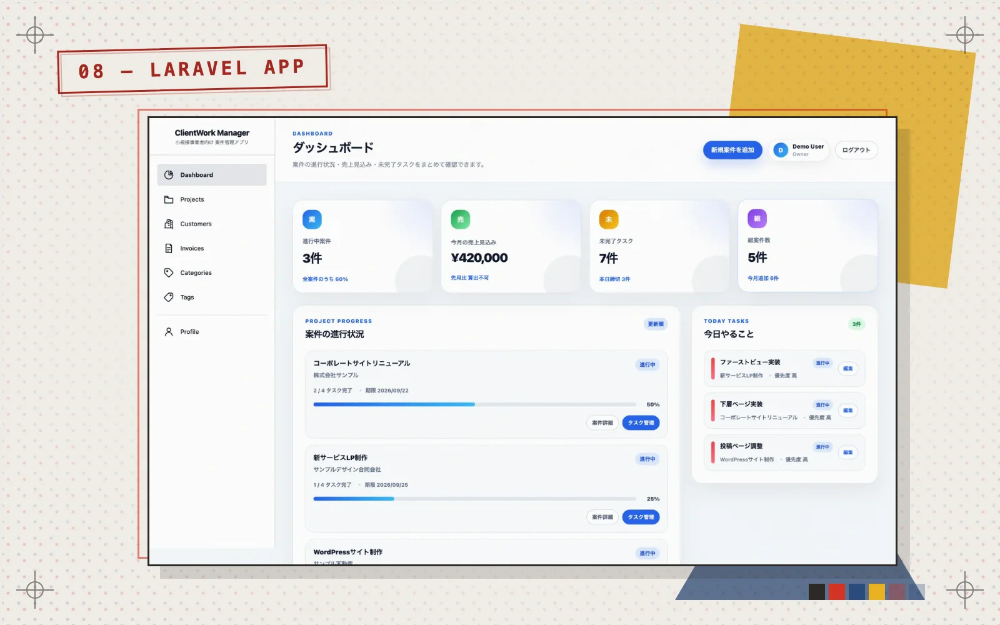
案件管理から請求・入金確認まで。決済通知の再送を考慮した、フリーランス向け業務アプリ。
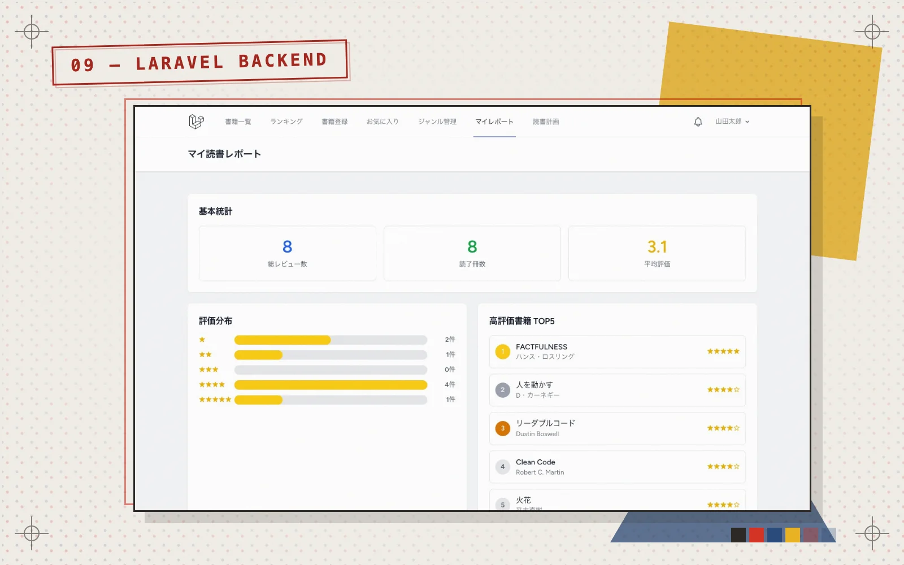
書籍の検索・レビュー・読書計画をまとめたアプリ。日次バッチの通知と、認証つきJSON APIを実装。
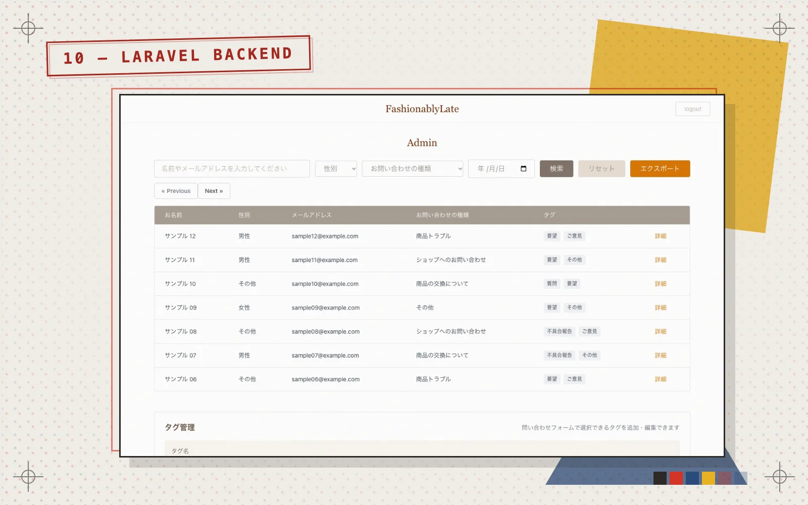
入力・確認・完了のフォームと、検索・タグ管理・CSV出力を備えた管理画面。認証つきAPIと自動テストを実装。
Webアプリの技術ごとの根拠は Engineering Profile にまとめています。
ご要望・目的・予算をお聞きします（無料）
構成案とお見積もりをご提出します
Figmaでデザインカンプを作成し、ご確認いただきます
HTML/CSS/JavaScript実装と、必要に応じてWordPressテーマ化を進めます
PC・スマホで確認し、合意した修正後に納品します